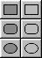
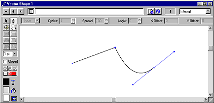

Using Director > Vector Shapes and Bitmaps > Drawing vector shapes > Using vector shape drawing tools
Using Director > Vector Shapes and Bitmaps > Drawing vector shapes > Using vector shape drawing tools |
Using vector shape drawing tools
You use the tools in the Vector Shape window to draw free-form shapes or geometric figures. You can define a shape with the Pen tool by creating curve or corner points through which a line passes.
To draw regular shapes, you use the Rectangle, Rounded Rectangle, and Ellipse tools.

To create a vector shape using the Pen tool:
1 |
In the Vector Shape window, click the New Cast Member button. |
2 |
Click the Pen tool and begin to draw:
 |
To create a corner point, click once. |
|
To create a curve point, click and drag. Dragging creates control handles that define how the line curves through the point you define. |
|
To constrain a new point to vertical, horizontal, or a 45° angle, hold down Shift while clicking. |
|
To draw using a basic shape tool:
1 |
In the Vector Shape window, click the New Cast Member button. |
2 |
Select the Filled or Unfilled Rectangle, Rounded Rectangle, or Ellipse tool. |
3 |
Hold down the mouse button to start a shape, drag to draw, and release the mouse button to end the shape. |
To constrain a rectangle to a square, or to constrain an ellipse to a circle, hold down Shift while dragging. |
|
To select a vertex or vertices:
To select one vertex, select the Arrow tool and click the vertex. |
|
To select multiple vertices, either select the Arrow tool and hold Shift while clicking the vertices, or click and drag a selection rectangle over the vertices (marquee-select). |
|
To select all the vertices in a curve, select the Arrow tool and double-click one of the vertices in the curve. |
To create multiple curves, do one of the following:
If using the Pen tool, double-click the last vertex drawn. The next vertex will start a new curve. |
|
With no vertices selected, use the Pen tool to start a new curve. |
|
To create two separate curves from one, select two adjacent vertices in a curve and choose Modify > Split Curve. |
|
If the current shape is empty or closed, select one of the shape tools and draw a new shape. |
Note: If you create multiple shapes in the Vector Shape window, Director treats all of the shapes as one if you change shape attributes. If, for example, you create ten open shapes in one Vector Shape window and select Close, Director closes all ten shapes.